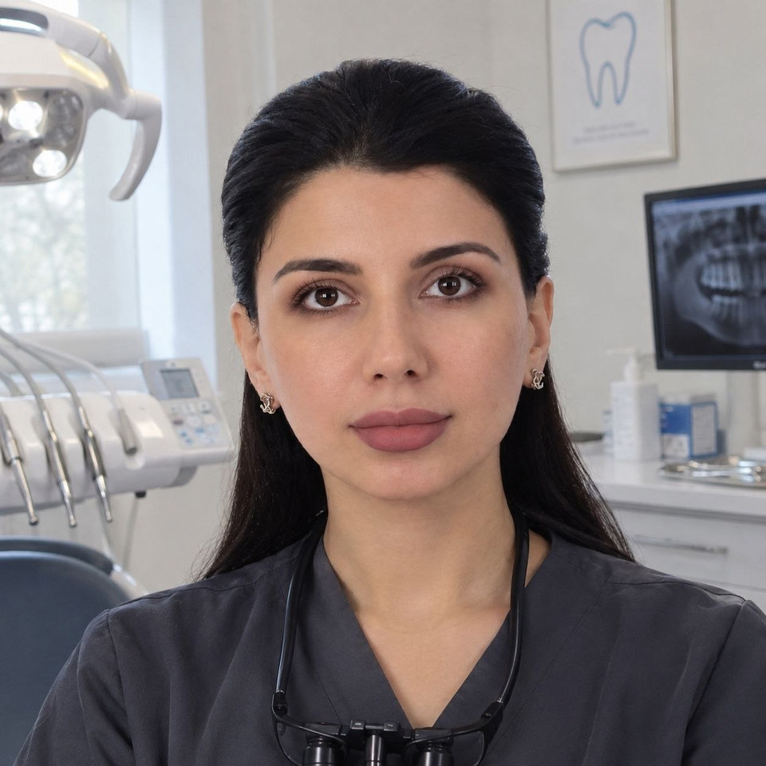
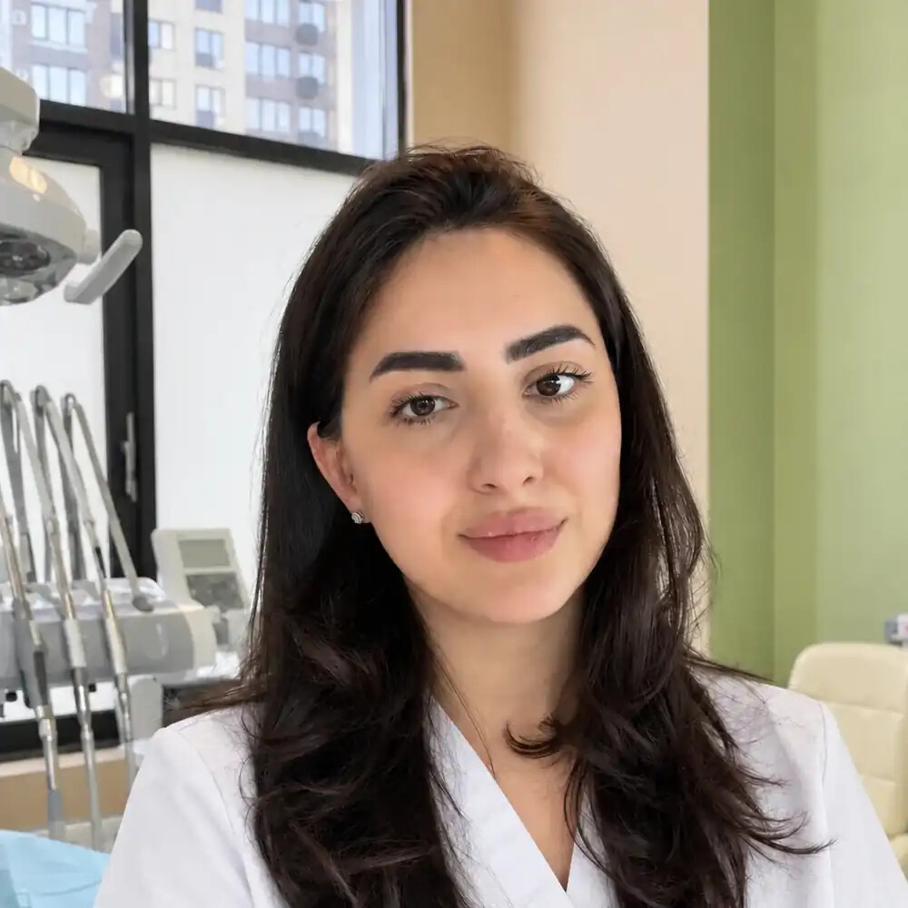

Прокшино · Коммунарка · стоматология
Точное лечение.
Спокойный план.
Диагностика, лечение, ортодонтия, имплантация и протезирование — в клинике у метро «Прокшино». Врач объяснит этапы и стоимость до начала лечения.
Адреспроспект Магеллана, 5
Режим работыЕжедневно · 09:00–21:00

ПЕРВЫЙ ШАГПонять ситуацию.
Обсудить варианты.
Обсудить варианты.
Честный каталог услугПлан лечения после осмотраЗапись в DentalPRO или по телефону
ПРАЙС · 254 ПОЗИЦИИ
Найдите цену
до визита.
Примеры точных позиций из каталога. Врач определит план лечения после осмотра.
В быстрых примерах нет совпадений. Откройте полный прайс на 254 услуги.
Быстрые примеры из официального прайса. Полный каталог — 254 услуги.
Открыть все 254 позиции01 / Направления
Нужное лечение —
понятными шагами.
Основные направления клиники и точные цены — в открытом каталоге. Полную стоимость плана врач определит после осмотра.
 ФОТО КЛИНИКИ
ФОТО КЛИНИКИ01 · эндодонтия
Лечение корневых каналов
Первичное эндодонтическое лечение однокорневого зуба; штифт и постоянная пломба не входят.

02 / Ортодонтия
75 000 ₽Брекет-системы
Фиксация металлической лигатурной системы на одну челюсть.

03 / Профилактика
6 000 ₽Профессиональная гигиена
Позиция из открытого прейскуранта клиники.
04 / Терапия
4 950 ₽Восстановление зуба пломбой
Фотополимер, одна поверхность. Итог зависит от объёма лечения.
05 / Имплантация
33 000 ₽Установка имплантата
Osstem или Dentium; стоимость остальных этапов восстановления рассчитывается отдельно.
10 разделов · 254 позицииНайти услугу в полном прайсе
02 / Клиника
Сначала —
объяснение.
На консультации врач разбирает ситуацию и необходимые этапы лечения. Здесь — фотографии реальной клинической работы, опубликованные филиалом.
Официальный сайт клиники
03 / Команда
Врачи и их
профиль работы.
Специализации, стаж, образование и опубликованные сертификаты приведены по материалам клиники. Откройте карточку, чтобы посмотреть подробности.

Стоматолог-хирург · имплантолог · ортопед · терапевтДаниелян
Запись в DentalPRO Даниелян
Арам Яковлевич
25 лет стажа
Образование и обучение
Практика: имплантация системами Osstem и Straumann. В дополнительное обучение входят хирургические и ортопедические протоколы, препарирование под виниры и лечение корневых каналов с использованием микроскопа.

Врач-стоматолог · хирург-имплантолог
Наджафов Азер Этибарович
10 лет стажа
Образование и обучение
РНИМУ им. Н. И. Пирогова, специальность «Стоматология», квалификация «врач-стоматолог». Дополнительное обучение: реставрация жевательной группы зубов, синус-лифтинг, удаления и ортопедическое препарирование.
Реставрация жевательной группы зубов, 2022 ↗
Стоматолог-ортодонт
Фиашева Диана Андзоровна
7 лет стажа
Образование
МГМСУ им. А. И. Евдокимова, специальность «Стоматология», квалификация «врач-стоматолог».

Стоматолог-терапевт
Карапетян Анна Арменаковна
Более 10 лет стажа
Дополнительное обучение
Художественная реставрация фронтальных зубов; клиническая эндодонтия от диагностики до обтурации; эндодонтическое перелечивание.

Врач-стоматолог
Машрабова Амина Мубораккадамовна
Более 5 лет стажа
Образование
Диплом специалиста по стоматологии. Ординатура по стоматологии ортопедической.
04 / Первый приём
От вопроса —
к плану лечения.
Сначала врач оценивает состояние зубов. Затем обсуждает варианты и стоимость необходимых процедур.
Выбрать время в DentalPRO- 01
Запись
Выберите филиал и удобное время в системе DentalPRO или позвоните в клинику.
- 02
Осмотр и диагностика
Обсудите с врачом текущую ситуацию и необходимые обследования.
- 03
План и стоимость
Сверьте этапы лечения и цены по позициям открытого прейскуранта.
Телефон+7 (904) 519-96-97
Часы работыЕжедневно · 09:00–21:00